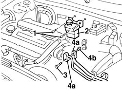
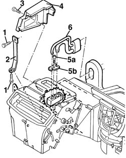

5040A80 expansion/connection pipe - r r
- Path
- Procedures > 50 AUXILIARY UNITS > 5040 AIR CONDITIONING CASING AND COMPONENTS > 5040A air conditioner coolant circuit > 5040A80 expansion/connection pipe - r r
- Kind
- repair procedure (removal / refitting; the operation number is the code)
- Applies to
- all engines; all production periods
- Interactive page
- https://sloeber94.github.io/elrnDB-a156/en/#/3238323
Applies to: all engines; all production periods
Applies to: all engines; all production periods; only with equipment: Air Conditioner
 Removing
Removing
 Refitting
RefittingDrain the coolant. 5040A10 Air conditioning refrigerant CIRCUIT - Draining and Refilling
1. Unscrew.
2. Move the power steering fluid cup.
3. Unscrew.
4. Disconnect the unions (4a) and take the bush (4b).

Applies to: all engines; all production periods; only with equipment: Air Conditioner
1. While operating under the dashboard, unscrew the air conditioner assembly link.
2. Remove the link.
3. Unscrew the expansion valve lid.
4. Remove the lid.
5. Unscrew (5a) and take the plate (5b).
6. Remove the union.

Applies to: all engines; all production periods; only with equipment: Air Conditioner
Refitting
RemovingCheck that the component is intact.
Reposition the union.
Reposition the plate and screw it.
Fasten the expansion spring lid with its screws.
Reposition the air conditioner link and screw it.
Reposition the bush, connect the unions and screw them.
 | Fastening | Component | Ø | Value (daNm) |
|---|---|---|---|---|
- | Bolt | Evaporator connector | M6 | 0.9 - 1.2 |
Position the power steering fluid cup and screw it.
Rload the coolant. 5040A10 Air conditioning refrigerant CIRCUIT - Draining and Refilling